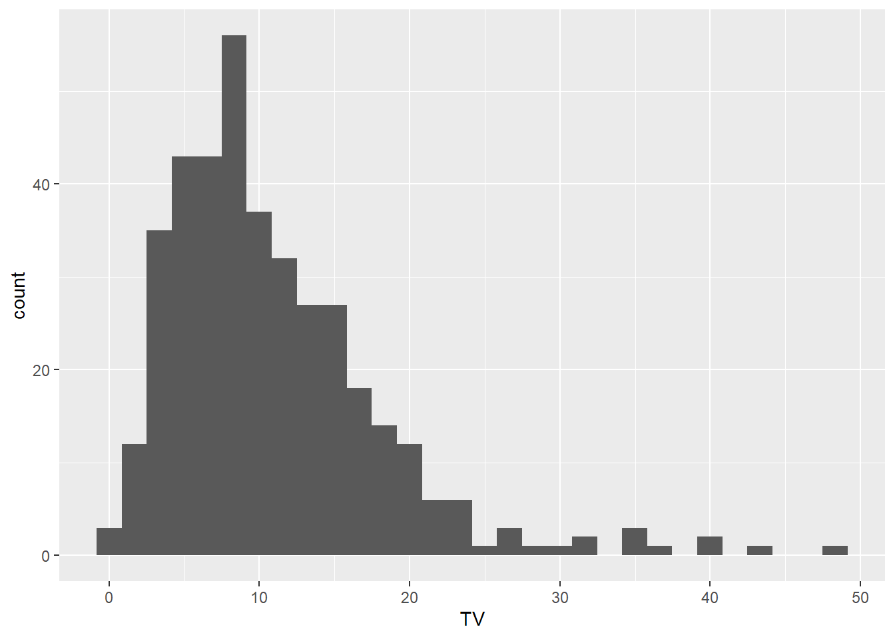
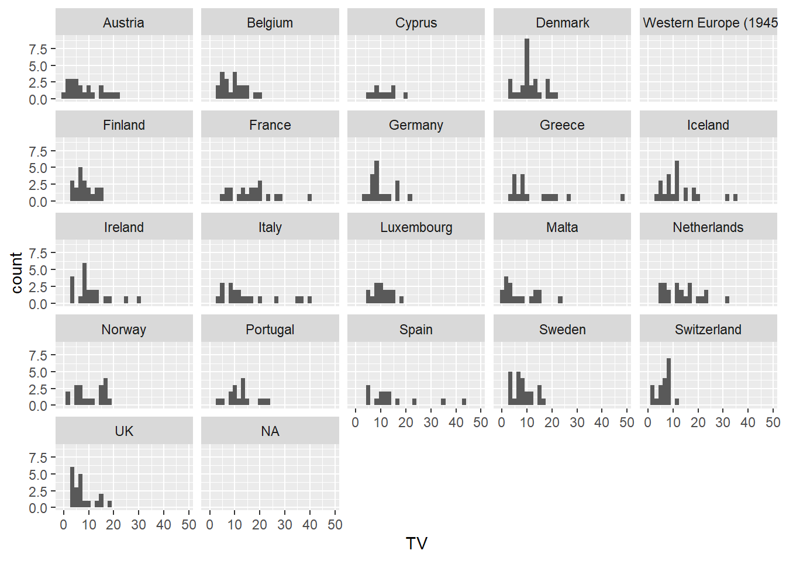
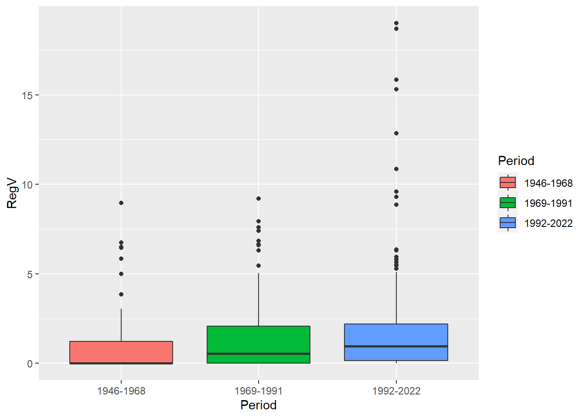
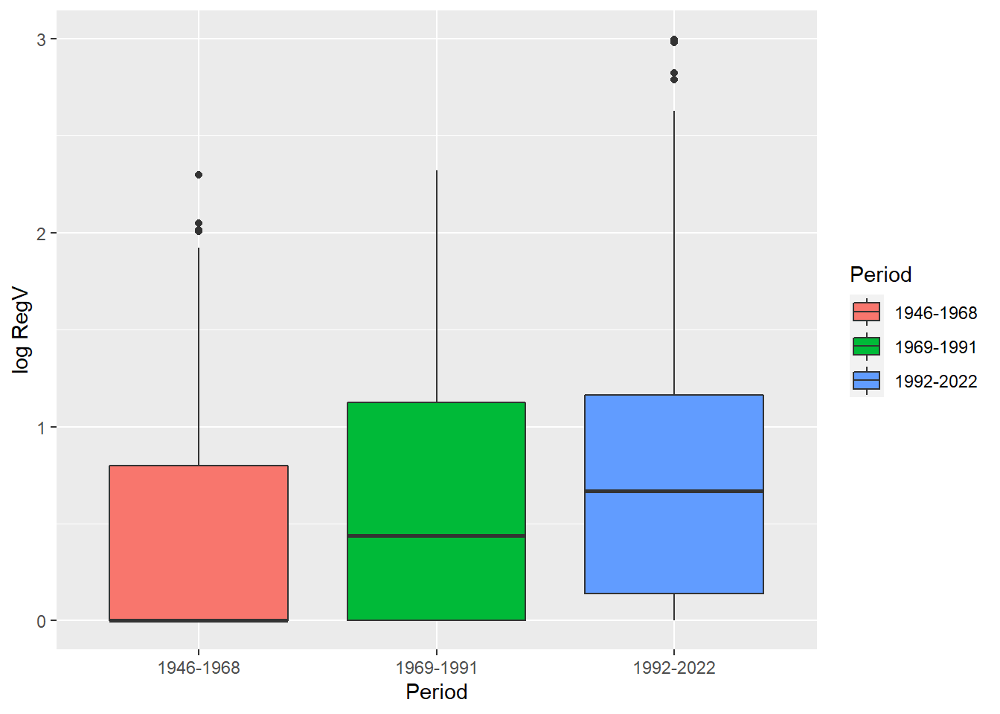
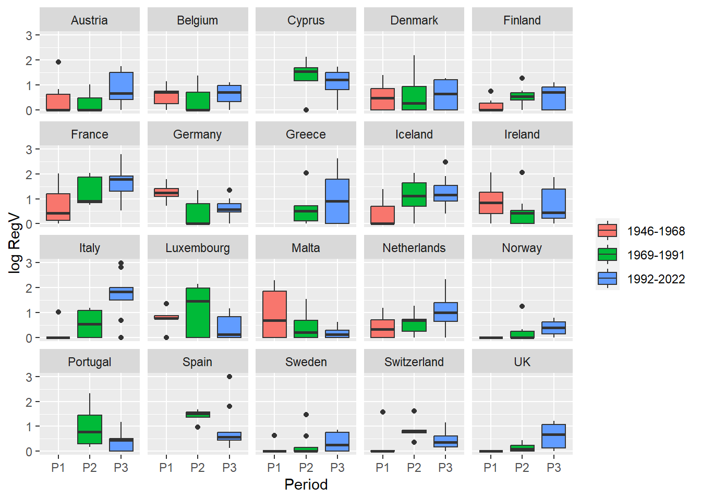
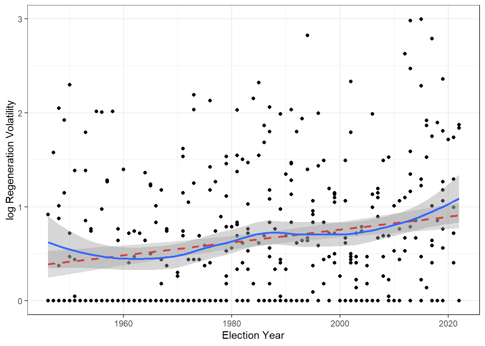

# Setting the compiling options
knitr::opts_chunk$set(echo = TRUE)
# Cleaning the environment
rm(list = ls())
# Installing packages
#install.packages("tidyverse")
#install.packages("readxl")
# Loading packages
library(tidyverse) # load the tidyverse programming environment
library(readxl) # for importing xlsx filesReplication exercise on electoral volatility
Introduction
First, we have to set up our project. In the first chunk of code we define knitr parameters, install and load the necessary packages.
Second, we must get the data. We will download it directly from the internet through R. We start by defining the URL where the data is hosted.
The dataset Party system volatility, regeneration and de-institutionalization in Western Europe (1945–2015) (Emanuele, 2015) is on a dedicated webpage from the University Luiss Guido Carli. I have copied and pasted the URL to the dataset below. I have also added the link to the dat update for the elections between 2015 and 2022.
By default, any Quarto/RMarkdown document sets the working directory on the same folder where you have downloaded the .Rmd file. We will get this path and add the name of the file that contains the data to it. Therefore, you have to substitute the path in dest by the path of your working directory and leave the same file name at the end of the path.
Finally, we can proceed to download the data.
# Defining the data URL
data_url <- "https://cise.luiss.it/cise/wp-content/uploads/downloads/2019/03/Dataset-of-Electoral-Volatility-and-its-internal-components-in-Western-Europe-1945-2015.xlsx"
update_data_url <- "http://www.vincenzoemanuele.com/uploads/8/0/5/1/80519836/update_on_elections_2015-2022.xlsx"
# Get working directory path
getwd()[1] "C:/Users/acana/Dropbox/Research/GitHub/teaching/ebpc_unilu2023/14_session14"# Create the destine file in your working directory
## in my case
dest <- "C:/Users/acana/Dropbox/Research/GitHub/teaching/ebpc_unilu2023/14_session14/volatility_1945-2015.xlsx"
dest_update_data <- "C:/Users/acana/Dropbox/Research/GitHub/teaching/ebpc_unilu2023/14_session14/update_on_elections.xlsx"
# Download the data to the working directory
download.file(data_url, dest, mode="wb")
download.file(update_data_url, dest_update_data, mode="wb")The next step is opening the data contained in the .xlsx files.
# Open the data
vol_data <- read_excel("C:/Users/acana/Dropbox/Research/GitHub/teaching/ebpc_unilu2023/14_session14/volatility_1945-2015.xlsx")
vol_update_data <- read_excel("C:/Users/acana/Dropbox/Research/GitHub/teaching/ebpc_unilu2023/14_session14/update_on_elections.xlsx")Cleaning and merging the data
Check at the environment tab below. Can you find the vol_data and vol_update_data objects there? Great! That means that we have the data already!
Now, the first thing to do whenever we analyse a new dataset is taking a first look at its structure. We will use the tidyverse environment instead of R base functions for the most of it.
# Look at the data structure for the elections from 1945 to 2015
glimpse(vol_data)Rows: 347
Columns: 8
$ Country <chr> "Austria", "Austria", "Austria", "Austria", "Austria", "~
$ Election_Year <dbl> 1949, 1953, 1956, 1959, 1962, 1966, 1970, 1971, 1975, 19~
$ Election_date <dttm> 1949-10-09, 1953-02-22, 1956-05-13, 1959-05-10, 1962-11~
$ RegV <dbl> 5.85, 0.00, 0.00, 0.00, 0.00, 1.30, 0.30, 0.00, 0.00, 0.~
$ AltV <dbl> 6.00, 3.55, 5.45, 2.95, 1.50, 3.20, 6.25, 1.80, 0.45, 1.~
$ OthV <dbl> 0.35, 0.45, 0.20, 0.05, 0.30, 0.25, 0.05, 0.20, 0.00, 0.~
$ TV <dbl> 12.20, 4.00, 5.65, 3.00, 1.80, 4.75, 6.60, 2.00, 0.45, 1~
$ ...8 <chr> "Emanuele, V. (2015), Dataset of Electoral Volatility an~So what do we have here? The first thing we notice is that our dataset has 347 rows (i.e, country-year observations) and 8 columns (i.e., variables). Each of the rows above contains information on the name of the variable, the variable type and the values of the first number of observations.
Take your time to look at it.
You may notice that the last variable, …8, contains information on the dataset citation. We can check this with the commands summary and head.
# Get a summary of the variable "...8"
summary(vol_data$...8) Length Class Mode
347 character character # Look at the first ten observations
head(vol_data$...8, n = 10) [1] "Emanuele, V. (2015), Dataset of Electoral Volatility and its internal components in Western Europe since 1945, Rome: Italian Center for Electoral Studies, http://dx.doi.org/10.7802/1112"
[2] NA
[3] NA
[4] NA
[5] NA
[6] NA
[7] NA
[8] NA
[9] NA
[10] NA The command summary tells us that it is a variable of type character (i.e., a string) with length 347, which means that has 347 characters (or letters) in total. The head command confirms that the first observation only contains the dataset citation and the rest is missing values, that in R are represented by NA (i.e., not available). We can remove it and take another look at the data.
# Remove the variable ...8
vol_data <- vol_data %>%
select(-...8)
# Check the data structure again
glimpse(vol_data)Rows: 347
Columns: 7
$ Country <chr> "Austria", "Austria", "Austria", "Austria", "Austria", "~
$ Election_Year <dbl> 1949, 1953, 1956, 1959, 1962, 1966, 1970, 1971, 1975, 19~
$ Election_date <dttm> 1949-10-09, 1953-02-22, 1956-05-13, 1959-05-10, 1962-11~
$ RegV <dbl> 5.85, 0.00, 0.00, 0.00, 0.00, 1.30, 0.30, 0.00, 0.00, 0.~
$ AltV <dbl> 6.00, 3.55, 5.45, 2.95, 1.50, 3.20, 6.25, 1.80, 0.45, 1.~
$ OthV <dbl> 0.35, 0.45, 0.20, 0.05, 0.30, 0.25, 0.05, 0.20, 0.00, 0.~
$ TV <dbl> 12.20, 4.00, 5.65, 3.00, 1.80, 4.75, 6.60, 2.00, 0.45, 1~Now, we can look at the update data.
# Look at the data structure for the update on the elections from 2015 to 2022
glimpse(vol_update_data)Rows: 42
Columns: 7
$ Country <chr> "Greece", "Portugal", "Switzerland", "Spain", "Cyprus", ~
$ Election_Year <dbl> 2015, 2015, 2015, 2015, 2016, 2016, 2016, 2016, 2017, 20~
$ Election_date <dttm> 2015-09-20, 2015-10-04, 2015-10-18, 2015-12-20, 2016-05~
$ RegV <dbl> 2.65, 0.60, 0.25, 19.00, 3.60, 5.45, 0.15, 5.80, 0.90, 0~
$ AltV <dbl> 4.45, 11.45, 4.00, 14.85, 10.55, 18.40, 4.85, 24.90, 21.~
$ OthV <dbl> 1.30, 1.75, 0.30, 1.65, 1.20, 0.90, 0.50, 0.35, 0.85, 0.~
$ TV <dbl> 8.40, 13.80, 4.55, 35.50, 15.35, 24.75, 5.50, 31.05, 23.~Great! Both data sets have the same structure already. Therefore, we can merge them to have an unique dataset with all the observations together. We can do this with the function from the tidyverse package and then take a glimpse of the new data set m_vol_data.
# Merge the data sets
m_vol_data <- full_join(vol_data, vol_update_data)
# Look at the data structure of the merged dataset
glimpse(m_vol_data)Rows: 389
Columns: 7
$ Country <chr> "Austria", "Austria", "Austria", "Austria", "Austria", "~
$ Election_Year <dbl> 1949, 1953, 1956, 1959, 1962, 1966, 1970, 1971, 1975, 19~
$ Election_date <dttm> 1949-10-09, 1953-02-22, 1956-05-13, 1959-05-10, 1962-11~
$ RegV <dbl> 5.85, 0.00, 0.00, 0.00, 0.00, 1.30, 0.30, 0.00, 0.00, 0.~
$ AltV <dbl> 6.00, 3.55, 5.45, 2.95, 1.50, 3.20, 6.25, 1.80, 0.45, 1.~
$ OthV <dbl> 0.35, 0.45, 0.20, 0.05, 0.30, 0.25, 0.05, 0.20, 0.00, 0.~
$ TV <dbl> 12.20, 4.00, 5.65, 3.00, 1.80, 4.75, 6.60, 2.00, 0.45, 1~Ok! So now that we have merged the data, we can make the necessary transformations before the analyses. First, we should transform the variable Country into a factor. This allows us to group the information by each country category, which is definitely more useful than analysing single country-year elections.
# Converting character into a factor variables
m_vol_data <- m_vol_data %>%
mutate(Country = as.factor(Country))
# Check the data structure again
glimpse(m_vol_data)Rows: 389
Columns: 7
$ Country <fct> "Austria", "Austria", "Austria", "Austria", "Austria", "~
$ Election_Year <dbl> 1949, 1953, 1956, 1959, 1962, 1966, 1970, 1971, 1975, 19~
$ Election_date <dttm> 1949-10-09, 1953-02-22, 1956-05-13, 1959-05-10, 1962-11~
$ RegV <dbl> 5.85, 0.00, 0.00, 0.00, 0.00, 1.30, 0.30, 0.00, 0.00, 0.~
$ AltV <dbl> 6.00, 3.55, 5.45, 2.95, 1.50, 3.20, 6.25, 1.80, 0.45, 1.~
$ OthV <dbl> 0.35, 0.45, 0.20, 0.05, 0.30, 0.25, 0.05, 0.20, 0.00, 0.~
$ TV <dbl> 12.20, 4.00, 5.65, 3.00, 1.80, 4.75, 6.60, 2.00, 0.45, 1~Exploring the data
Now we can get started with the data analysis!
We can start with some simple visualization. We can use a histogram to visualize the distribution of any other numeric variable, such as total volatility. Looking at the data distribution is always useful and one of the first steps of any data analysis. The distribution tells us a few interesting things about the underlying phenomenon we are looking at.
# Histogram of Total Volatility
ggplot(m_vol_data, aes(x = TV)) +
geom_histogram()
What does it tell us here?
Even though we learned a few things about volatility in Europe as a whole, the histogram doesn’t tell us anything about cross-country differences. We may want to look at the distribution within each country now.
# Histogram of Total Volatility by country
ggplot(m_vol_data, aes(x = TV)) +
geom_histogram() +
facet_wrap(~Country)
Now we can see that there are important differences across countries, but also similarities. Some of them has very patterned volatility levels while others have wider distributions, although the mean seems to be quite similar in most cases.
In addition, some countries have more identifiable outliers, but we don’t know the specific elections. Let’s take a look!
# Showing cases where total volatility > 30 only
m_vol_data %>%
filter(TV > 30)# A tibble: 10 x 7
Country Election_Year Election_date RegV AltV OthV TV
<fct> <dbl> <dttm> <dbl> <dbl> <dbl> <dbl>
1 Greece 2012 2012-05-06 00:00:00 12.8 33.8 1.85 48.5
2 Iceland 2013 2013-04-27 00:00:00 10.8 23.3 0.500 34.6
3 Italy 1994 1994-03-27 00:00:00 15.8 20.4 2.95 39.2
4 Italy 2013 2013-02-25 00:00:00 18.7 16.0 1.90 36.6
5 Netherlands 2002 2002-05-15 00:00:00 9.3 20.1 1.90 31.3
6 Spain 1982 1982-10-28 00:00:00 3.5 37.2 3.15 43.8
7 Spain 2015 2015-12-20 00:00:00 19 14.8 1.65 35.5
8 Iceland 2016 2016-10-29 00:00:00 5.8 24.9 0.35 31.0
9 France 2017 2017-06-11 00:00:00 15.3 23.2 2.25 40.7
10 Italy 2022 2022-09-25 00:00:00 5.29 26.9 2.53 34.7Does any of these elections sound familiar to you?
Replication analysis
Now let’s do a little replication exercise!
In their analyses, Chiaramonte and Emanuele (2017) divide the data in three periods: 1946-1968, 1969-1991 and 1992-2015. Then, they measure the average levels of Regeneration Volatility (RegV) for each country on each of the periods to see what party systems have become more volatile over time (our first research question) and if RegV has generally increased (our second research question).
We have more observations now, so we can clsuter the latest elections included in the data set update within the their period (1992-2022). This will already provide us woith sone leverage to test whether their conclusions apply later in time.
Also, they display the conclusion of their analysis on a table. We can take a further step by summarising the same information but with a single more visually compelling plot.
To do this, first, we have to create a factor variable that represents each of the periods with a different category.
# Create period variable
m_vol_data <- m_vol_data %>%
mutate(Period = ifelse(Election_Year >= 1946 &
Election_Year <=1968, 1,
ifelse(Election_Year >= 1969 &
Election_Year <=1991, 2,
ifelse(Election_Year >= 1992, 3, NA))),
# transform period variable into a factor
Period = factor(Period,
levels = c("1",
"2",
"3"),
labels = c("1946-1968",
"1969-1991",
"1992-2022")))
# Get a summary of new the variable "period"
summary(m_vol_data$Period)1946-1968 1969-1991 1992-2022 NA's
99 127 161 2 It seems that there are some missing values, so let’s remove them first!
# Removing missing values
m_vol_data <- m_vol_data %>%
filter(!is.na(Period))
# Get a summary of new the variable "period"
summary(m_vol_data$Period)1946-1968 1969-1991 1992-2022
99 127 161 Now we can see that the first period has 99 elections, the second period 127 elections and the third period 161 elections. This already suggest that despite the amounting for a similar time lapse, the last period have witnessed many more electoral repetitions.
Has regeneration volatility also increased?
We can start by visualizing the average levels of RegV and its dispersion by period using boxplots.
# Boxplot of Regeneration Volatility by period
ggplot(m_vol_data, aes(x = Period, y = RegV)) +
geom_boxplot(aes(fill = Period))
The boxplots in this case are not too informative, because most elections have low RegV levels. What we can do is using the logarithmic form of RegV, which lowers the weight of outliers. As a trade-off, the interpretation of the values becomes less intuitive. However, this is not a problem if what we want to do is see temporal patterns.
# Boxplot of the log of Regeneration Volatility by period
ggplot(m_vol_data, aes(x = Period, y = log(RegV + 1))) +
geom_boxplot(aes(fill = Period)) +
ylab("log RegV") 
It seems that volatility has indeed increased with time! However, this tells us little about cross-country differences.
Let’s look at the same plot by country.
# Creating a Period variable with shorter labels for aes
m_vol_data <- m_vol_data %>%
mutate(Period_lab = factor(Period,
labels = c("P1",
"P2",
"P3")))
# Boxplot of log RegV by period and country
ggplot(m_vol_data, aes(x = Period_lab, y = log(RegV + 1))) +
geom_boxplot(aes(fill = Period)) +
facet_wrap(~Country) +
# Adding some aesthetic details
xlab("Period") +
ylab("log RegV") +
guides(fill=guide_legend(title=""))
Great! This single plot summarises even more information than the table of Chiaramonte and Emanuele (2017) and in a more intuitive way.
How do you interpret this visualization?
Finally, let’s fit the relationship between time and RegV with a regression and plot the results on a scatter plot. This is pretty straightforward approach to test whether RegV has increased over time.
What do you think of what we see?
# Scatter plot and regression line of RegV by time
ggplot(m_vol_data, aes(x = Election_Year, y = log(RegV + 1))) +
geom_point() +
geom_smooth(method=lm , linetype = "dashed", color="red", fill="darkgrey", se=TRUE) +
geom_smooth() +
theme_bw() +
ylab("log Regeneration Volatility") +
xlab("Election Year")
So this is all! I hope this exercise was useful and informative.
I hope you have enjoyed our little walk through R and it encourages you to practice replication over different datasets with R by yourself!😊
References
Emanuele, V. (2015). Dataset of Electoral Volatility and its internal components in Western Europe (1945-2015). Rome: Italian Center for Electoral Studies.
Chiaramonte, A., & Emanuele, V. (2017). Party system volatility, regeneration and de-institutionalization in Western Europe (1945–2015). Party Politics, 23(4), 376–388.